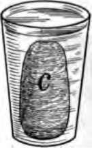
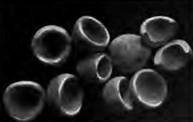
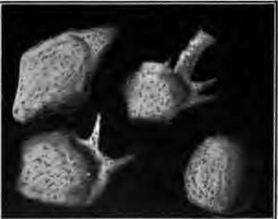
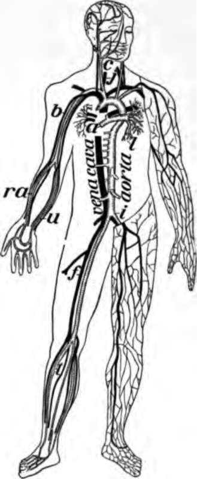

Chapter IX. The Blood And Its Passage Through The Body
Description
This section is from the book "The Human Body And Health", by Alvin Davison. Also available from Amazon: The Human Body and Health.
Chapter IX. The Blood And Its Passage Through The Body
The Need Of Blood
The food, after being digested in the intestine, must be carried to all parts of the body to feed the organs. This is done by the blood constantly flowing in tubes, some of which collect the food from the intestine.
Fig. 48. William Harvey.
The dead or worn out parts of the body, in the arms, legs and elsewhere, are taken up by the blood and brought to the lungs, kidneys and sweat glands. These organs remove the waste from the blood. The blood is also needed to carry the oxygen of the air from the lungs, to the working cells in all regions of the body. The important fact that blood circulates through the body was discovered by William Harvey in 1628.
Parts Of The Blood
The blood is made of tiny cells called corpuscles, and a liquid named plasma. The plasma is almost as clear in appearance as water, but the blood looks red because of the millions of red corpuscles present.
Fig. 49. This glass was caught full of blood at the slaughter shop, and left standing in a cold room over night. The clot c, floats in the serum.
Very soon after blood runs from cut vessels it forms into a jellylike mass. This is called a clot. Its formation is known as the clotting of the blood. It is by this means, and the squeezing together of the cut part of the blood tube, that nature stops the flow of blood.
A clot is caused by fibrin a threadlike substance which forms in shed blood and entangles the corpuscles. By putting the clot in a cloth and washing and squeezing it in a pan of water, the white fibrin may be washed clear of the corpuscles.
Blood Corpuscles
These tiny bodies are of two kinds, the red, and the white. The red corpuscles have the form of deep saucers or cups, and are five hundred times as numerous as the white ones.
The white corpuscles often like little balls, change their shape almost constantly, and often creep out of the blood tubes and among the tissues. A single drop of blood contains more than a million corpuscles. Many die every hour, and new ones are being formed within the bones and also by small bodies called lymph nodes.
Fig. 50. Red corpuscles, one of which is cut into halves. Much enlarged.
Use Of Blood Corpuscles
The red corpuscles are like little boats. They carry oxygen to every cell in the body and carry away much of one kind of waste, known as carbon dioxide. An important part of a red corpuscle is iron. It is shaped like a deep saucer and can carry a larger load than if it were of the form of other cells in the body. Its true form has only lately been discovered. The white corpuscles help to clot the blood in a wound. They remove unnecessary tissue, such as the lump formed by the healing of a broken bone. Their greatest duty is to act as soldiers, defending the body from bacteria, which they can destroy in large numbers. A white blood corpuscle has been seen to eat a dozen bacteria in a few minutes. The pus, or white matter, in a sore is largely made of dead white corpuscles, which rushed there to kill the bacteria, but were themselves overcome by the bacteria.
Fig. 51. White blood corpuscles. The three at the left are creeping about. Drawn from a drop of blood kept warm under the microscope. Much enlarged.
Blood Plasma
The plasma is a clear fluid. In addition to floating the corpuscles, it contains food for the cells of the body, and some ashes or waste matter given out by the cells. Like the white corpuscles, it passes out through the small, thin-walled tubes so as to bathe every cell in the body and give it food. At the same time it receives and carries away waste products.
Blood plasma is present only in the living body. When blood has been caught in a glass, a clot forms, and on the following day a clear fluid is seen to surround the clot. This is blood serum. It differs from plasma in not having in it the agent causing the blood to clot.
How The Blood Passes Through The Body
The blood is contained in a central organ called the heart, and branching tubes named vessels. One set of vessels named arteries carries the blood from the heart to the head, legs and other parts c the body. Another set of vessels known as veins returns the blood to the heart. The veins appear as blue lines beneath the skin on the under side of the wrist.
Fig. 52. Chief veins and arteries of the body, a, place of the heart; the veins are in black. On the right side of the picture the veins just under the skin are shown and on the other side the deep vessels near the bones. b, vessels to the lungs.
The small amount of blood oozing out of the tiny tubes called capillaries which connect the veins with the arteries, is brought back to the heart by a set of vessels named lymphatics or lymph vessels (Fig. 56).
How Strong Drink Reaches The Blood
Very little of the food swallowed passes directly from the stomach into the blood. Most of it goes into the intestine. Strong drink, however, quickly enters the transparent blood tubes in the lining of the stomach. Within three minutes after whisky is swallowed some of it may be found in the blood. The greatest amount of alcohol is present in the blood about fifteen minutes after the drink has been taken.
Continue to:
- prev: Chapter VIII. Tobacco And Other Narcotics And Their Effect On Health
- Table of Contents
- next: The Blood And Its Passage Through The Body. Part 2